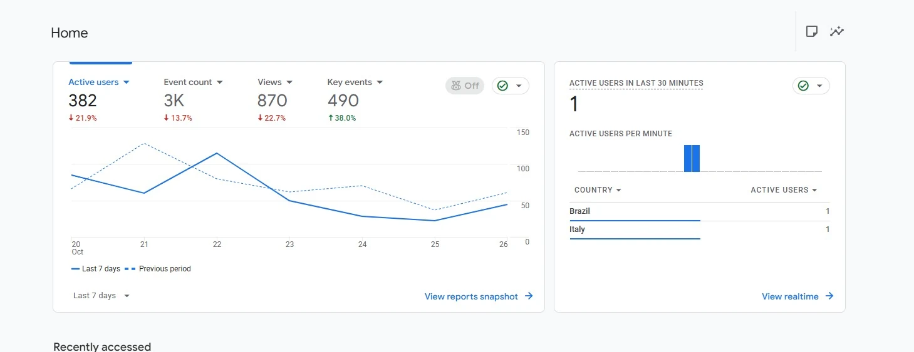
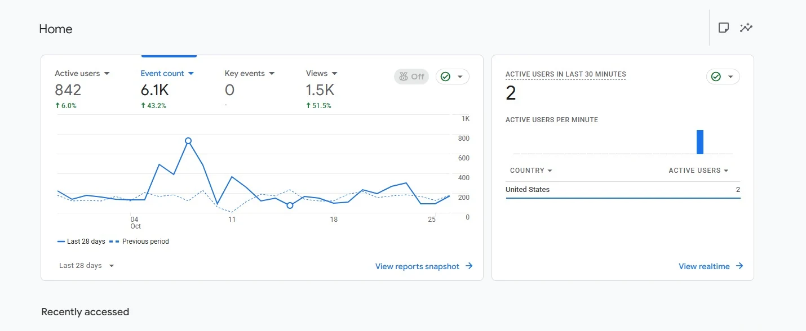

01
Keyword & SERP Research
Commercial-intent keyword discovery, competitor analysis, search intent mapping and opportunity prioritization.
I'm Muhammad Haroon, an SEO Executive specializing in on-page SEO, semantic optimization, local search and service-area pages. I combine search intent with practical execution and clear performance reporting.
I work on service-based business websites, from commercial keyword research and SERP analysis to semantic content optimization, service-area pages, metadata and internal linking.
At IT Tribes, I progressed from SEO Intern to SEO Executive. My work includes SEO support for international clients, including Westlink Cleaning Services in Australia, along with audits, reporting and mentoring junior team members.
Connect on LinkedIn ↗Commercial-intent keyword discovery, competitor analysis, search intent mapping and opportunity prioritization.
Metadata, headings, entity relevance, content structures, internal linking and service page optimization.
Location-focused landing pages targeting relevant local and high-intent service queries.
Website crawling, technical issue identification, WordPress fixes, keyword tracking and analytics reporting.
The following Google Search Console and Google Analytics screenshots were supplied as portfolio evidence. Properties are unnamed, and figures show observed totals rather than claimed improvements or attributed business outcomes.

Search performance snapshot, 3-month reporting window.

Search performance snapshot, 3-month reporting window.

Search performance snapshot, 3-month reporting window.

GA4 dashboard activity data from the provided screenshot.

GA4 dashboard activity data from the provided screenshot.

GA4 dashboard activity data from the provided screenshot.
Worked on on-page and local SEO for a commercial and residential cleaning business, with an emphasis on local commercial-intent keywords and service-area landing pages. The screenshots above are not assigned to this client because the supplied files do not establish which website each dashboard belongs to.
Keyword research for service businesses, optimization of 200+ service and location pages, semantic content work with Google's Natural Language API, WordPress fixes, site crawling, reporting and mentoring 10+ junior team members.
Competitor research, keyword planning, metadata and heading optimization, internal linking, WordPress updates and blog content alignment with search intent.
Virtual University of Pakistan
Intermediate in Computer Science (ICS)Govt Degree College Takht Bhai, Mardan
Pashto · Urdu · English
Analyze intent, SERPs, competitors and search opportunities.
Review content structure, metadata and technical issues.
Improve service pages, content relevance and internal links.
Track performance through GSC, GA4 and ranking reports.
Available for relevant SEO opportunities and collaborations.
mharoonofficial1@gmail.com